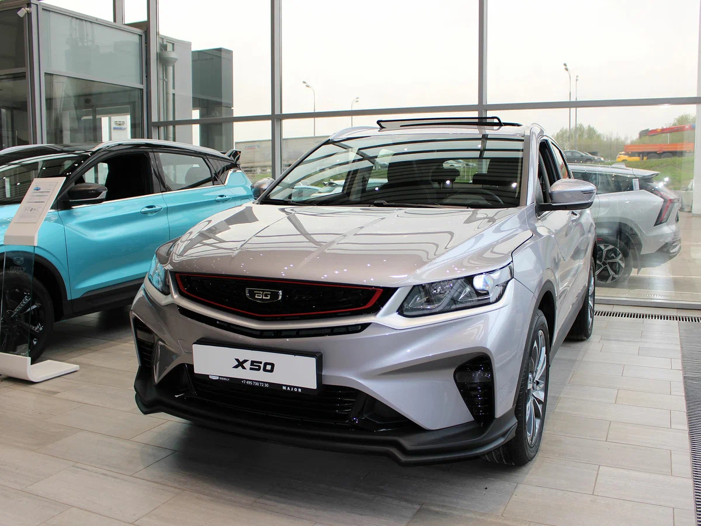
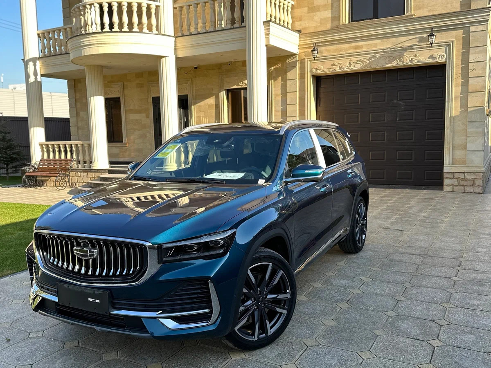

Мы предлагаем лучшие автомобили по выгодным ценам.

В настоящий момент в прайс-листе указаны семь фиксированных комплектаций седана — от базовой Standart c аудиоподготовкой и передними электростеклоподъёмниками, но без единой подушки безопасности за 770 900 рублей, до #CLUB EnjoY с климат-контролем, мультимедийной системой LADA EnjoY Pro и 15-дюймовыми литыми дисками — за 1 290 000 рублей. Самая доступная версия, в которой есть водительская подушка безопасности, это Comfort стоимостью 1 101 000 рублей.
Лифтбек, лифтбек Cross и универсал Cross по умолчанию оснащены кондиционером и с сопоставимым набором оборудования стоят на 30, 105 и 95 тысяч дороже седана.
Цена: от 770 900 – 1 290 000 руб

Формально более высокий класс модели подразумевает иной уровень цен и оснащения. В базовой комплектации Comfort'24 за 1 239 900 есть кондиционер, 4 электрических стеклоподъёмника, обогрев наружных зеркал, АБС и система экстренного торможения. Однако водительская и пассажирская подушки безопасности, а также система динамической стабилизации доступны лишь начиная с версии Comfort'25 за 1 558 000 рублей.
Доплата за вариатор, составляет 50 тысяч рублей. А за более мощный 122-сильный мотор - 70 тысяч. Универсал SW при прочих равных на 130 тысяч дороже. Оснащение Cross это еще плюс 133 тысячи к цене седана и добавка в 123 тысячи к прайсу на универсал.
Цена: от 1 239 900 – 2 020 000 руб

Уже больше года дилеры продают обновлённый кроссовер — рестайлинговую версию можно узнать по иной решётке радиатора с вертикальными планками и ряду новшеств в салоне. Теперь на всех модификациях, включая базовую, руль можно отрегулировать не только по углу наклона, но и по вылету.
Самая доступная переднеприводная версия с механической коробкой передач в комплектации Comfort стоит 1 999 000 рублей. В оснащение такой машины входят две фронтальные подушки безопасности, АБС, ЕSP, климат-контроль, медиасистема с 10-дюймовым сенсорным экраном, подогревы передних сидений и боковых зеркал, а также датчики дождя и света.
Вторая по уровню оснащения комплектация — Elite — на 450 тысяч дороже, и отличается не только наличием более удобной роботизированной коробки, но и рядом полезных опций, включая электрические обогревы руля и ветрового стекла, камеру заднего вида, светодиодные фары, боковые подушки и шторки безопасности. Эта же комплектация может быть и с полным приводом. В последнем случае цена составит 2 599 000 рублей.
ена: от 1 999 000 – 2 899 000 руб

В настоящий момент кроссовер доступен в трёх основных комплектациях: Active, Style и Prestige. Даже базовая версия за 2 479 990 рублей предлагает весьма приличный набор оборудования: мультимедийную систему с 10,25-дюймовым сенсорным экраном, камеру заднего вида, задние датчики парковки, кондиционер, подогрев передних сидений и цифровую приборную панель.
Комплектация Style за доплату в 111 тысяч рублей добавляет боковые подушки безопасности, климат-контроль, обогрев руля и задних сидений, а также систему бесключевого доступа.
Топовое исполнение Prestige включает светодиодную оптику, систему камер кругового обзора 360 °, электрорегулировки сиденья водителя, панорамную крышу, а также дополнительные системы помощи водителю, такие как контроль слепых зон и функция автоматической парковки.
Цена: от 1 999 000 – 2 899 000 руб

Самый дорогой кроссовер в десятке популярных в России машин построен на модульной платформе CMA, совместно разработанной компаниями Geely и Volvo. Работающий в паре с 8-ступенчатым гидромеханическим автоматом Aisin 2,0-литровый турбомотор JLH-4G20TDB также создан при участии шведских инженеров. В Китае есть модификации с передним приводом, но в нашей стране официально продаются только полноприводные версии.
Выбирая из трёх доступных комплектаций — Luxury, Flagship и Exclusive, можно вполне обойтись базовым исполнением, включающим солидный арсенал систем пассивной и активной безопасности, полный набор тёплых опций, комбинированную отделку сидений из кожи и алькантары, аудиосистему с восемью динамиками, панорамную крышу с люком, 19-дюймовые литые диски и даже электропривод багажной двери с функцией бесконтактного открывания.
Добро пожаловать в MayKen — ваш надежный автосалон!
У нас вы найдете автомобили на любой вкус: от городских компактных до мощных внедорожников.
Качество, надежность и лучшие условия покупки — вот что отличает MayKen.
Телефон: +7(999)044-55-71
Email: MayKen@gmail.com
Адрес: г.Лос-Сантос, ул.Велорианская, 666